如何获取商店应用的安装包
看 PowerPoint 版教程
获取链接
Microsoft Store
我们在 Microsoft Store 找到喜欢的应用后，可以直接用“分享”功能获取链接
（这里用来演示的 Microsoft Store 是较新版本，但其实步骤都差不多，由于 Windows 8.x 的应用商店已经停止，所以不再演示）
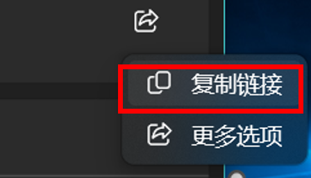
方式一
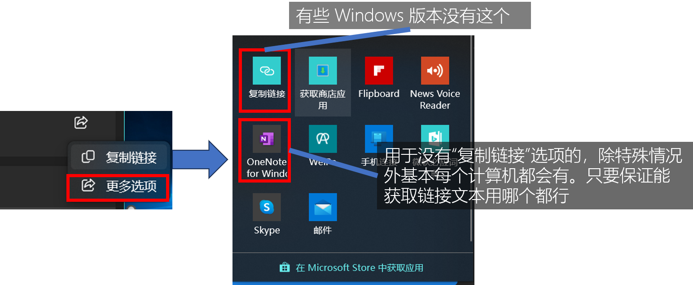
方式二
回到目录
网页版 Microsoft Store
网页版 Microsoft Store 可以直接用来获取链接，方法更加简单
链接：https://apps.microsoft.com
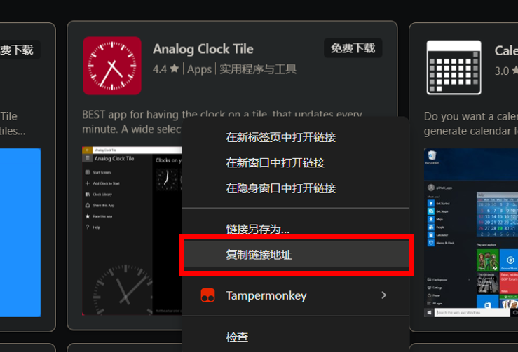
方式一：直接在对应项目右键，然后选择复制链接地址
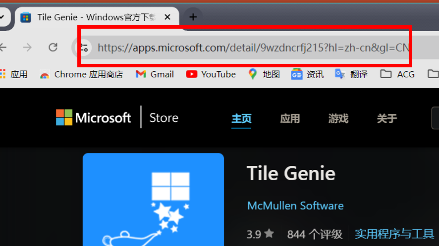
方式二：进入相应应用的详情页后，复制地址栏的链接
回到目录
其他方式
除了之前两个方式，我们还能通过其他方式来获取。
网络发展这么多年，Metro 应用分享链接已经分散到各种各样的网站，如论坛、新闻等，或者在一些软件的官网，Metro 应用的收集网站等。
下面展示一个例子。（IT之家的一篇资讯）
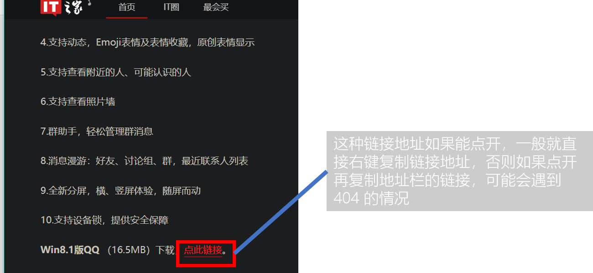
回到目录
分析链接结构
Metro/UWP 应用的分享链接有一定的结构，分两个版本。
较旧的版本（这种链接已经无效了，但仍能提取有效信息）：
http://apps.microsoft.com/windows/zh-cn/app/f14c496c-0a59-4193-91ec-66f4c4cc0368
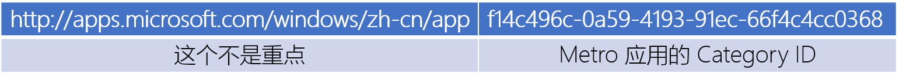
较新的版本（现在用的版本。下架的应用这种链接就无效了，但是仍能提取有效信息）：
https://apps.microsoft.com/detail/9wzdncrfj215
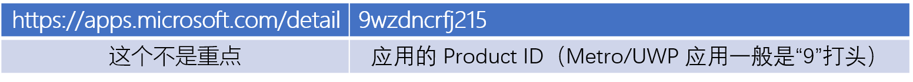
除了上文提到的，链接后面可能还会有“/”或“?”接着后面的一段文本（如：https://apps.microsoft.com/detail/9wzdncrfj215?hl=zh-cn&gl=CN），这个部分通常用于网页区域语言等。但是这里不需要，删除即可
补充：这个较新版本的连接也分新旧两版，上面给的是新版（也就是现在用的版本）的连接，旧版的是这个：
https://www.microsoft.com/store/apps/9nblggh5wxnw
获取包
这里重点介绍前三种方式。
Microsoft Store - Generation Project
这是最常用的方式。可用于获取 Microsoft Store 所有上过架的 Metro/UWP 应用。
网站链接：https://store.rg-adguard.net/
以下是网页截图
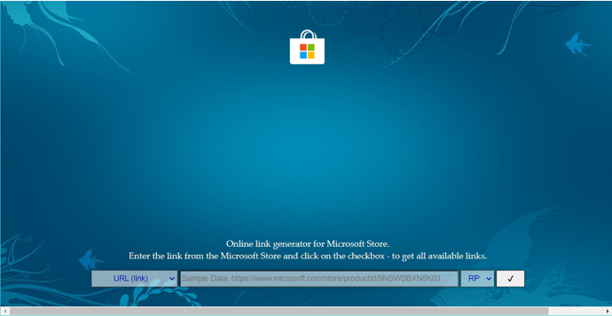
以下是网页各个部分的说明
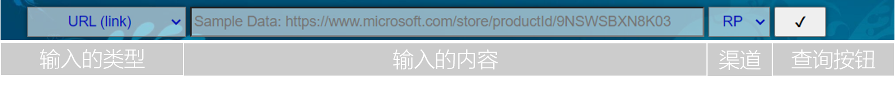
输入的类型：指的是欲输入的类型，例如如果你要用链接选择“URL (link)”。输入的内容的类型一定与输入的内容对应。
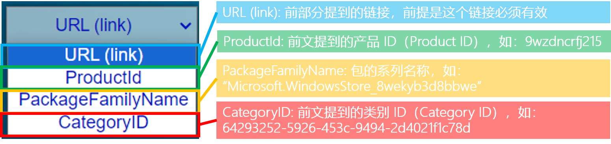
ProductId: 前文提到的产品 ID（Product ID），如：9wzdncrfj215
Product ID 还可以用于 winget 的在线安装或查询信息等。
CategoryID: 前文提到的类别 ID（Category ID），如：64293252-5926-453c-9494-2d4021f1c78d，比 Product ID 早出现。
Category ID 用的范围最广泛，即使使用 Category ID 的分享链接已经失效。
目前可以用 Product ID （在线）转换为 Category ID，但目前我没看到用 Category ID 转换为 Product ID 的方法。
Product ID 和 Category ID 都可以用来获取上架或下架的应用。
Package Family Name: 包系列名称。以“_”为分隔符可以分为两个部分：
例子：Microsoft.WindowsStore_8wekyb3d8bbwe
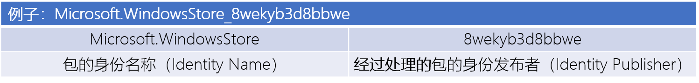
以上两个都可以从包的清单文件（Manifest）（XML 文件）可以查到
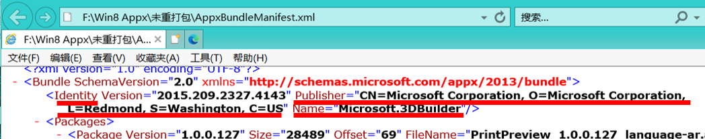
AppxBundle 的例子
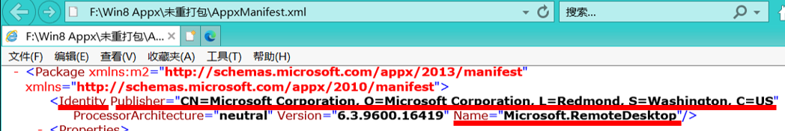
Appx 的例子
渠道：获取应用的渠道，分：Fast（快速）、Slow（慢速）、RP（Release Preview，发布预览）、Retail（正式版）
对我来说，这个区别不大，所以一般并不关注。如果一个渠道不成功，那么可以换另一个。不同渠道获取的结果可能有出入。
点击查询按钮后，如果查询到的话，会有如图所示的表格
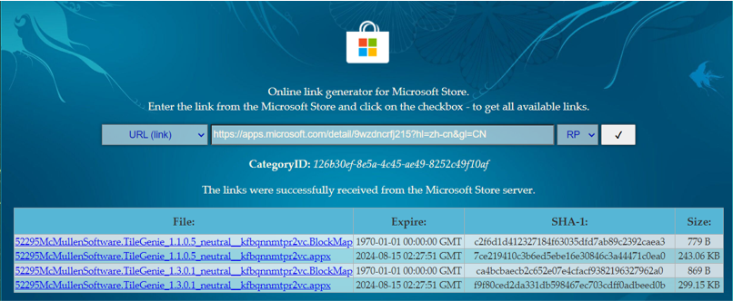
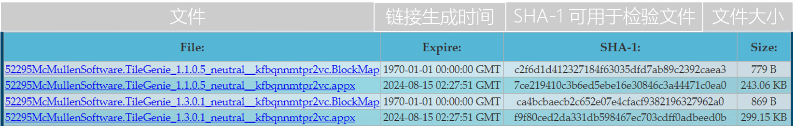
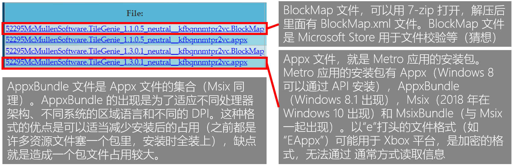
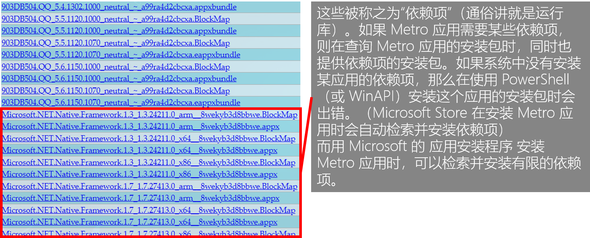
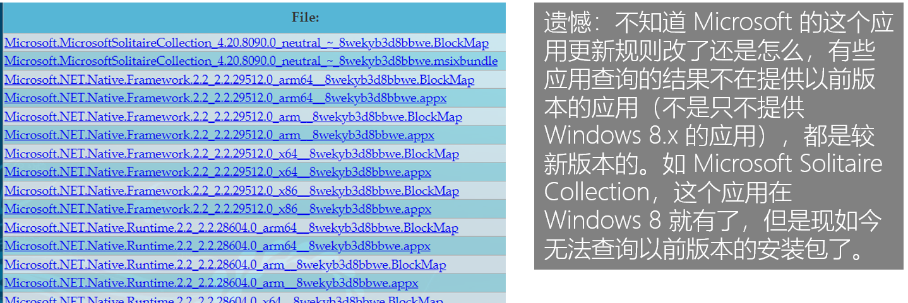
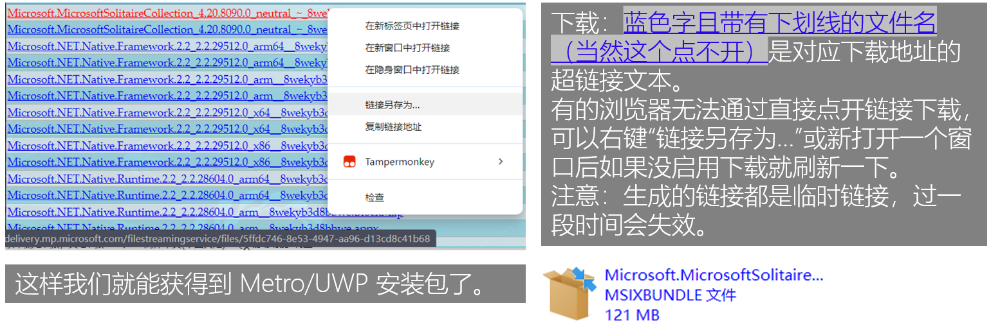
回到目录
获取商店应用（应用）
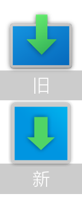
- 获取商店应用（GetStoreApp）是由 Github 用户“高怡飞”编写的应用。
-
应用简介
- 微软商店提供了对已上架商店应用的分发，下载和更新通道。但是在最新的微软商店中，微软要求用户下载商店的应用需要使用在线账户。这对一些从不使用微软账户且应用必须依赖商店下载的用户带来了困扰。因此我开发了这一款获取商店应用的桌面应用 ，该应用使用了微软商店提供的获取接口，绕开了微软商店官方提供的应用下载渠道。用户可以离线下载所需的应用安装包，进行独立部署。
-
该应用的基础功能
- 绕开微软商店下载并离线部署 Microsoft Store 应用
搜索商店应用
检查商店应用的版本状态，并更新旧版本应用
设备应用管理
访问网页版（接口出现问题时），并使用应用内置的下载工具下载
WinGet 程序包的安装、卸载和升级
注意：该应用不能绕过微软商店的付费渠道，如果您要获取的应用是付费应用，请从微软商店购买后下载。
- 绕开微软商店下载并离线部署 Microsoft Store 应用
系统版本限制：建议您的系统版本为 Windows 11（代号 21H2 / 内部版本号 22000）或更高版本，最低版本为 Windows 10（代号 2004 / 内部版本号 19041）或更高版本。
Github 项目：https://github.com/Gaoyifei1011/GetStoreApp?tab=readme-ov-file
Github 项目发行：https://github.com/Gaoyifei1011/GetStoreApp/releases
个人推荐大家用这个应用，界面友好，易用。不同版本有区别，可以下载适合你的版本。
软件截图：
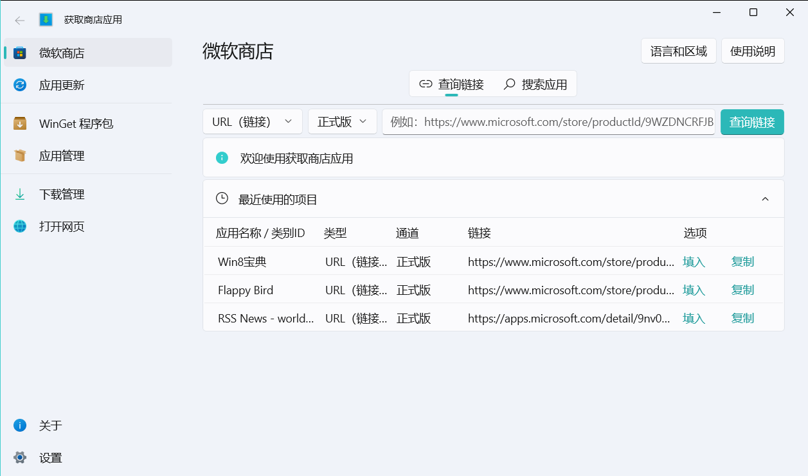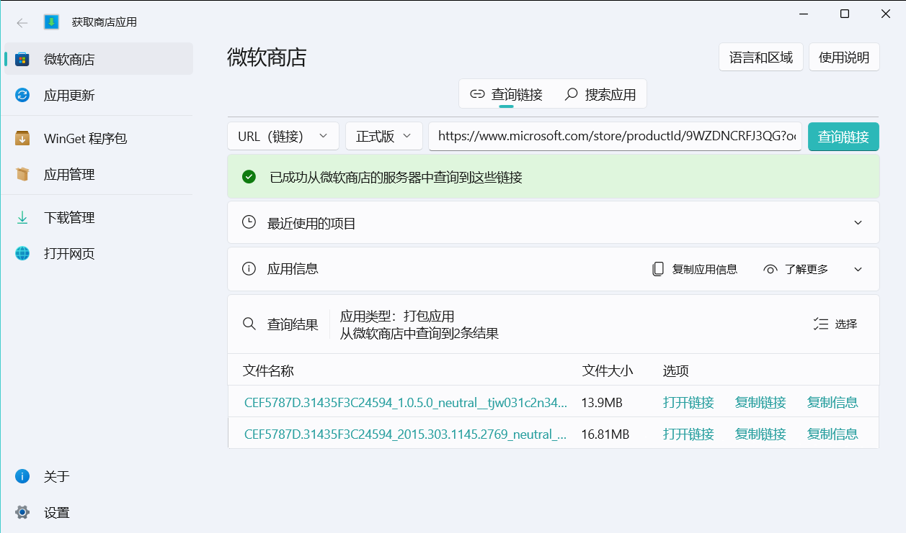
回到目录
Windows Apps Store（应用）
-
Windows Apps Store 是 B 站用户“Gxap”编写的程序。
- Windows Appx Store 能直接使用网页版的 Microsoft Store，检索、获取、安装 Metro/UWP 应用。当然，功能远不止于这些。
需要提前安装 WebView2 和 .Net 6.0 运行库。
建议在 Windows 10（内部版本 1507）及以上版本使用（虽然在 Windows 8.1 仍能使用大多数功能，但在“设置”界面会崩溃，Windows 8 我没有测试过）
视频：https://www.bilibili.com/video/av1200529620/
下载链接：https://zjh365-my.sharepoint.com/:f:/g/personal/hello_zjh365_onmicrosoft_com/El4swFWbKIdAkdn9M55aEeMB0XGD9jF0w6Iw-dKh7cCGDw?e=Q1v5R9
软件截图：
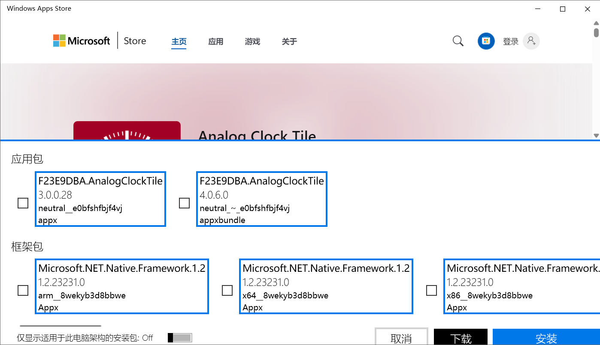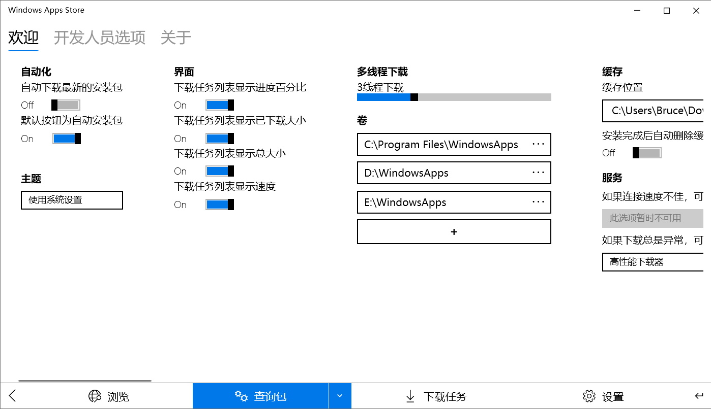
回到目录
直接获取下载直连
这个方法很早（约 2012 或 2013 年）就有了。个人不推荐，网络上有很多方法。
给一个示例：
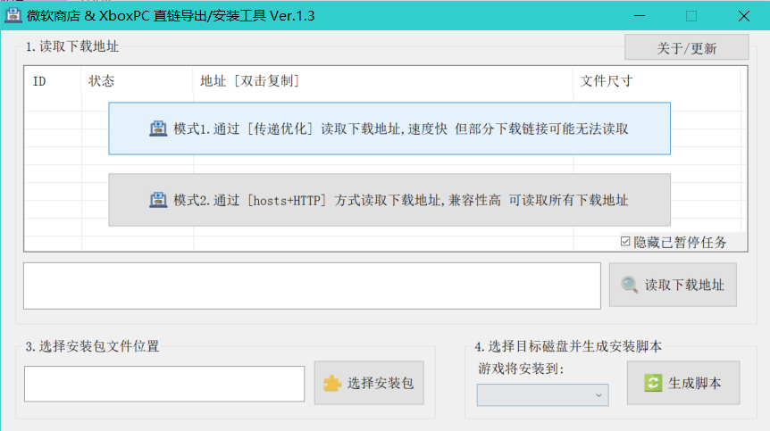
软件简介&下载链接：https://www.dogfight360.com/blog/1968/
回到目录
零碎的资源
如 Github，各大网盘、论坛，都可能会有零碎的资源。
推荐：Windows 8 Appx Archive，这里收集了许多 Windows 8.x 的 Metro 应用包，有些已经绝版了。
主页：https://archive.org/details/Win8AppxArchive（Internet Archive，互联网档案馆）
注意：该网站需要访问外网，因此需要特殊方法才能访问。

（如果你能上 Internet Archive， 你会看到这段文字上面有张图片）
这里再给出个网盘链接：https://pan.baidu.com/s/1dyhGdvQj1-sooRKTJ0bvdw?pwd=k3xc 提取码：k3xc
这个链接是我用来发布我制作/收集的工具的，里面有“Win8 Appx”文件夹，这里有我收集的一些 Metro 应用包和网盘资源链接。
回到目录
参考链接
摆脱微软应用商店，离线下载应用...... - 哔哩哔哩
链接：https://www.bilibili.com/read/cv20379046/
How to Download Offline Installer (APPX/MSIX) for Microsoft Store App – Windows OS Hub
链接：https://woshub.com/how-to-download-appx-installation-file-for-any-windows-store-app/
为M$应用商店下载离线安装程序(APPX/MSIX) – 知乎
链接：https://zhuanlan.zhihu.com/p/705429625
2024.08.17
2024.08.31 修改